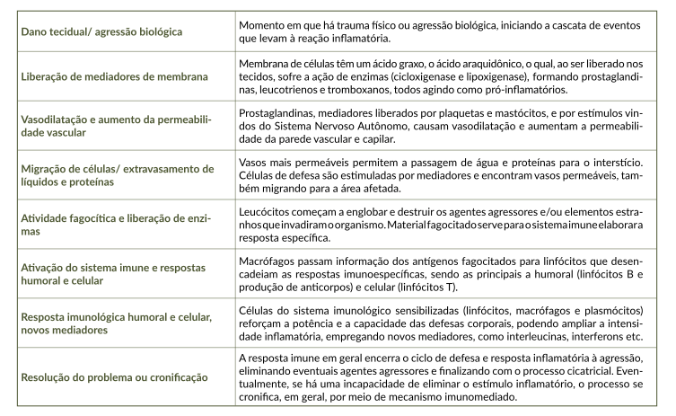

O processo inflamatório segue uma sequência de eventos, que explica seus sintomas, aponta para os principais alvos biológicos a serem abordados no tratamento, e que, no fim das contas, vão contribuir para sua evolução para cronificação ou cura, de acordo com a resultante da relação entre causa/estímulo nocivo, e adequação da resposta orgânica/eficiência da restauração da homeostase. Clique no Quadro 1 para ampliá-lo.
Quadro 1. Principais eventos fisiológicos, enzimas e mediadores envolvidos na resposta inflamatória.

Fonte: o autor.